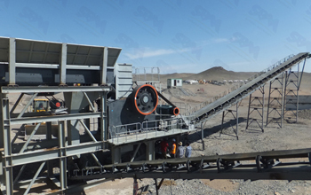

The practical application of scientific and reasonable method of operation, not only can prolong the life of the crusher machine can also improve production efficiency, the following instructions crushing machine in action should note.
Preparing Work: 1, should carefully examine whether there is a good lubricating bearings, bearing inner connection, and whether there is enough oil; 2, should be carefully examined all the fastening is completely fixed. 3, the belt is good, found with signs should be replaced, there is a belt or pulley in oil, a clean cloth and rub his application; 4, the protective device is good, if it finds the protection device phenomenon is unsafe, shall be immediately canceled. 5. Check whether the ore crushing cavity or other debris, such as minerals, or other debris should be removed.
Crusher machine start: 1. Before starting the inspection, proved the mechanical transmission part is normal; 2, the machine is only in the case of Xu start under load. 3, after the start, if found to have abnormal situation should immediately stop running, you must identify and eliminate irregularities, and then re-started the crusher machine.
Repair and maintenance: 1, the normal operation of the crusher machine, and then began pouring material. 2, breaking the material should be uniform to join the crushing chamber, and side effects, feeding should be avoided in order to prevent a sudden increase in load mutation or unilaterally. 3, under normal circumstances, bearing temperature should not exceed 35 ℃, the maximum temperature rise does not exceed 70 ℃. 4, parking, first feeding of the material can be crushing chamber work should have been stopped after the break, the car was completely closed to lift; 5, in use, Ruoyin crushing chamber materials, caused by parking congestion, immediately turn off the motor, the material must be removed, and then restart.
Lubricating: 1, A regular and timely attention to lubrication friction surface, then, to ensure the normal operation of the crusher and prolong life. 2, the machine commonly used calcium-based grease, the user can also be used depending on the location of the machine, other types of temperature and grease selection of other conditions, but must be protected by a well-oiled bearings. 3, was added within 50-70% of the total bearing, grease, must be replaced every three months. When changing the oil, clean gasoline and kerosene applications, and carefully clean ball bearing slides. 4, bracket, bracket before starting pad contact grease crusher.
Live chat with our professional customer service! Get the quotation list.
Chat Now